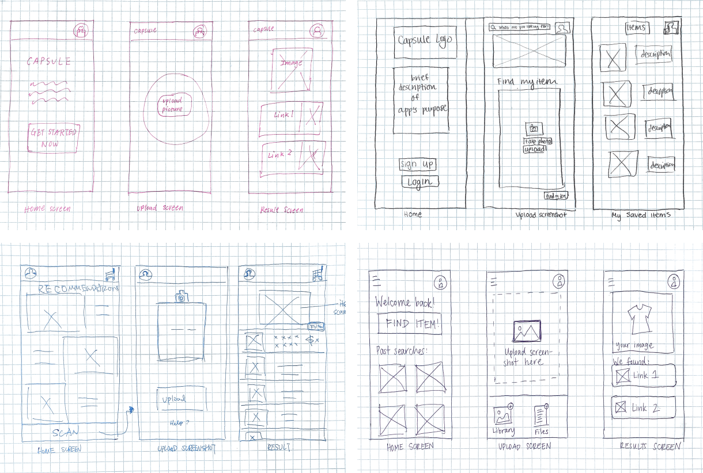
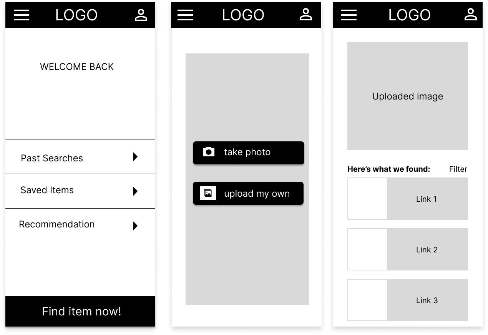
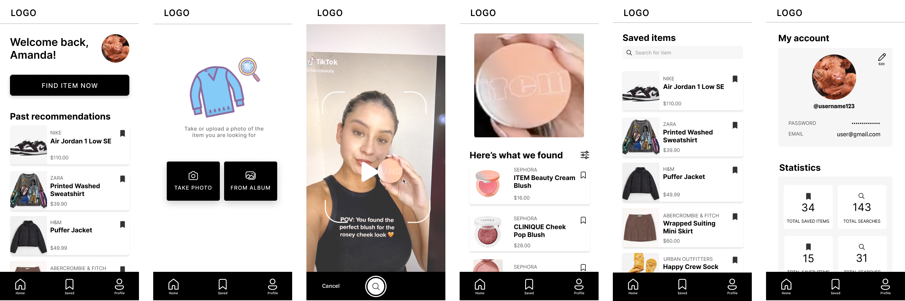
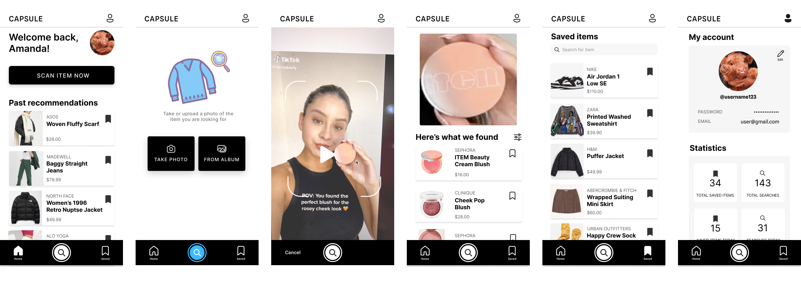

Introduction
This project focuses on redesigning the mobile app for CAPSULE, a start up AI application
that allows users to upload or take a photo of an item to a platform, then receive links
to purchase this item. When visiting
their website, most of the parts are
functional and they are able to get their points across in presenting their
home page, interactive photo upload, and providing suggested links based on the search. However, the app
is visually disorganized and suffers from a few usability issues. As such, in our redesign,
we focus on making the site more user friendly, making elements
more intuitive, and simplifying the structure so that information is
more readable and more logically grouped.
Analysis
We first began by more closely analyzing the details of the mobile app, focusing
on the usability and accessibility concepts that we discussed in class. Our
main points are described in more detail below:
Usability:
-
the instruction for uploading photo/taking photo is unclear and hard for users to navigate on the main page
-
the feeds on the main page are disorganized and unclear in their functions and relation to the rest of the frames
-
the search result page has limited information as it only provides the brand and price of the targeted results but not pictures or detailed information, and the horizontal scroll is hard for user navigation
Learnability:
- font and icon sizes do not follow specific logic
-
home page feed does not get generated based on user interest or onboarding selection
-
random text placed on top of search result image
-
there is no bottom navbar on the search result page, making it hard for users to navigate to other frames
-
no clear instructions on how to proceed following the search results nor how to tag/favorate the item
Memorability:
-
grouping and hierarchy do not really make sense in a few places, which
makes it difficult to remember the application layout
-
option to take a photo is under the "add a screenshot" top button, which is
confusing and hinders memorability
-
no shortcut for liking an item or selecting an item to proceed without clicking on that item,
making it hard to navigate the application within a short time frame and adapting to it
In terms of accessibility, there weren't any apparent visual concerns
as the color scheme is black and white. As such, in our redesign, we kept the original
color scheme and devote to prioritizing
being able to better navigate throughout the application and making
instructions more clear.
Initial Sketches
Featured below are some of our initial sketches, which generally focus on the
design of three main screens: a home screen featuring how to get started, an
upload screen with interactive options to take/upload photos, and a result screen.

Lo-fi Wireframes
Based on the usability problems identified in the previous section, we first
created some mockups for our redesign while trying to keep as many of the
original elements as possible.

-
To increase efficiency and usability, we changed the instruction on the top to be
"find item now" and moved it to the bottom. This creates a
clearer description of purpose of the button's functionality. This
mockup also keeps the search bar fixed at the bottom, making it
easy to access while browsing. The main page feed was replaced
by buttons with clear descriptions, making the point of each section
more readable and increasing
learnability. Other functionalities like setting or personal information are removed
from the bottom and collapsed into a clickable hamburger
button to prevent clutter and increase space efficiency.
-
Combined the photo taking and upload interfaces into one page with options to "take photo" or
"upload my own" with relevant icons, which makes the interface more standard and
more learnable by providing clearer instructions. Keeping the top navbar througout all frames should also
increase adaptability and memorability and provide easier navigation.
-
The search result page is redesigned to contain the search image, and a list of results found
with photos of each item, descriptions, and links to each.
This creates a more logical flow of user experience, and provides an option to filter the searched result which
increases usability. Users can filter based on price, relevance, or other categories, making the app more interactive.
-
Finally, we added a "welcome back" section on the top of the home screen, increasing user memorability and allows
more interactiveness with the app.
Hi-fi Prototyping
Next, we produced a first version hifi prototype on Figma for mobile screens.

Mockup Critique
After constructing the first version of the hi-fi prototypes, we contacted senior UIUX experts to provide feebacks
and the following is a summary of their ideas:
- In the home page, the "FIND ITEM" verbiage was not conducive to what the button was trying to do
- Allow for accessibility to take/upload a picture no matter where they are in the app (like TikTok's plus button at the bottom bar)
- The icons on the navbar should change color when the user is actively on that page. For example, the home page icon would be a different color when the users are on the home page of the app.
- The save button is slightly too small to easily press on it in the mobile screen.
Then, based on the feedbacks we received, we created a second version hifi prototype :

Conclusion
This project challenged my ability to combine all the knowledge I gained with UI/UX design
and come up with a redesign interface. I gained a lot of valuable
insights regarding how small designs play a big role in enhancing overall
accessibility and usability.
I also gained valuable experience with designing an interface from scratch. While it was
time consuming to come up with everything from sketch to low-fi to high-fi design,
those steps helped build a more thoughtful design. I realized how
useful Balsamiq and Figma are in terms of serving great applications to help make,
visualize, and test designs prior to implementations and will make sure to leverage on these
valuable tools in my future developments.